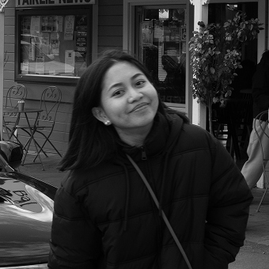

How did she end up here?

Started her career as a designer after realizing in university that the shortest path algorithm was not, in fact, her shortest path (iykyk).
Along the way, she discovered that while she may not know how to optimize the algorithm, she does know exactly where to put the button.
Long story short AI happened, now she likes the idea that she can fix the padding according to her preference without having a beef with a developer.
What they said about me
Having worked and sat closely with Desak, I've always had the opportunity to listen to her thorough judgements and witness her thoughtful design process. She's the kind of designer who is never satisfied with the first or second design options. She'd continue to refine and polish until it feels right functionally and aesthetically; a true explorer and crafter.
Asking "why" is a part of who she is, whether questioning why life unfolds the way it does... or why users behave in certain ways. She's brilliant in thinking critically and hitting the design sweet spot. I think that's why her designs are not only well-reasoned and strong, but also clean and enjoyable to look at. I wish I could still work and sit together with Desak!
I had the privilege of working with Desak at Tokopedia, and I was continually impressed by her exceptional visual taste and attention to detail. Desak is a quick learner who effortlessly adapts to new situations, always bringing fresh and creative solutions to the table.
I highly recommend Desak as an outstanding product designer. She has a remarkable talent for solving complex problems and transforming them into delightful, user friendly experiences.
Desak has consistently demonstrated strong performance as a designer. She shows solid critical thinking, a strong sense of design quality, and effective communication skills, combined with a positive and professional attitude.
Her ability to collaborate well with the team and contribute thoughtfully has made working with her a very positive experience. I'm very grateful to have her in the team and I wish I have the opportunity to work again with her in the future.
During our time on the Campaign & Promotion team, I had the pleasure of working alongside Desak, whose critical thinking and meticulous approach made a significant impression. Desak is adept at understanding requirements, defining problems, and ensuring thorough execution.
She isn’t afraid to challenge assumptions and maintains a tidy and well-thought-out work ethic. Beyond her professional strengths, Desak’s easy-going nature makes her a great colleague and friend!